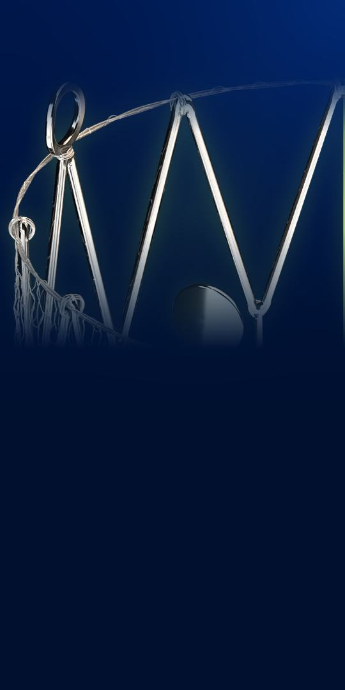

A self-expanding nitinol stent with a MicroNet mesh sleeve, in two products: CGuard EPS, sold through distributors outside the U.S. and not FDA-approved, and CGuard Prime.
Its 135 cm delivery system was recalled in the U.S. in May 2026 after a controlled launch showed it missed performance expectations; the stent itself was not. U.S. sales may not resume until the FDA is satisfied.
MI is heart attack. 0.95% of all enrolled patients (intent-to-treat), in a single-arm trial of the CGuard stent: Prime in 32 of 316, CGuard EPS in the rest. Company-reported; no comparison group.
The 10-Q reports substantial doubt about the company's ability to continue as a going concern. Cash and securities: $30.4M at Jun 30 (Dec 31: $54.2M). H1 revenue $5.17M, up 56.3% (Q2 alone, down 0.4%); net loss $28.0M, from $24.3M.